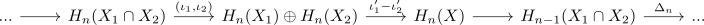
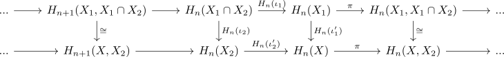

mayer vietoris for singular homology
Proposition
Let $X$ be a topological space, $X_1,X_2 \subseteq X$ subspaces such that $\mathrm{int}(X_1) \cup \mathrm{int}(X_2)$. Then there exists an exact sequence of relative singular homology

where $\partial: H_n(X) \rightarrow H_{n-1}(A \cap B)$ is given by
\begin{align*}
\partial: H_n(X) \rightarrow H_n(X,X_2) \cong H_n(X_1,X_1 \cap X_2) \rightarrow H_{n-1}(X_1 \cap X_2)
\end{align*}
Proof
corollary of algebraic mayer-vietoris sequence for the sequence

and <>
where the isomorphisms are given by the excision theorem for an open cover